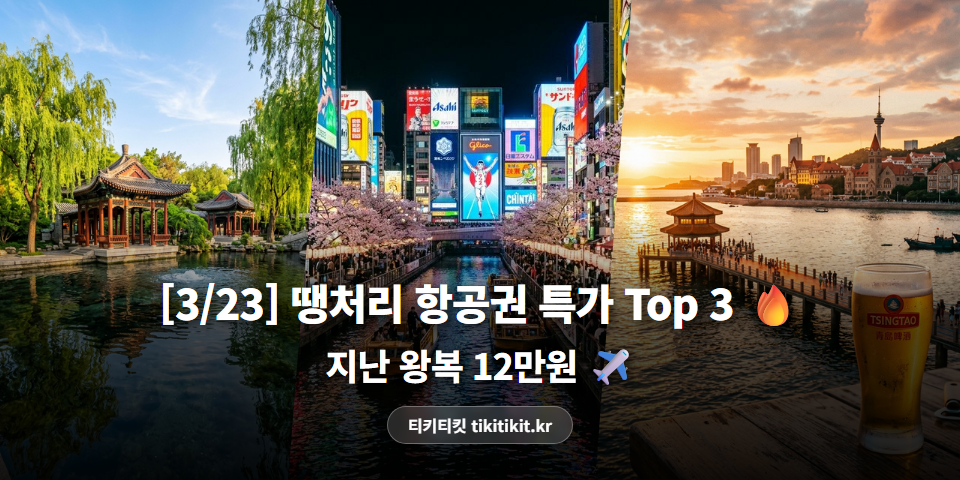
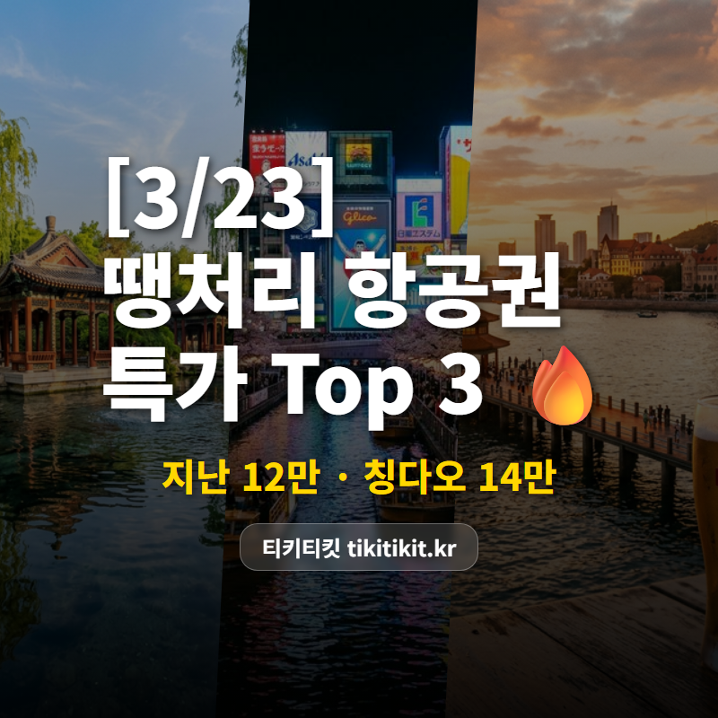

[3/23] 땡처리 항공권 특가 TOP 3 | 지난 12만원, 칭다오 14만원 ✈️

이 가격이면 고민할 시간이 아깝습니다 💨
지난 12만원대,
이런 가격은 오래 안 가요!
🏆 3/23 추천 특가 TOP3
🥇 1위
인천 ↔ 지난
에어로케이 · 4/4(토)~4/7(화) · 3박 4일
129,000원

대명호 야경 산책에 산동 만두까지 🥟
🥈 2위
청주 ↔ 칭다오 (중국)
에어로케이 · 3/25(수)~3/27(금) · 2박 3일
143,000원

해변 따라 독일풍 건물 산책 🍺
🥉 3위
부산 ↔ 오사카(간사이) (일본)
이스타항공 · 4/8(수)~4/10(금) · 2박 3일
153,700원

🌸 3월 말~4월 초 오사카성 벚꽃이 만개하는 시기!
도톤보리 야경 + 벚꽃 나들이, 완벽 코스 🌸
※ 유류할증료/텍스 포함 왕복 총액 기준
※ 좌석이 빠지면 가격이 바뀌거나 사라질 수 있어요.
💡 에디터 픽 : 3위 부산-오사카
부산-오사카 왕복 153,700원!
이스타항공 직항으로
김해공항에서 바로 출발, 부담 없이 다녀올 수 있어요.
도톤보리에서 오코노미야키 한 판 🥘
오사카성 벚꽃 산책은 덤!
왕복 15만3,700원이면
김해공항에서 바로 출발, 부담 없어요.
📌 인천 출발은 뭐가 있을까?
이번 인천 출발 추천 라인업!

✈️ 오키나와 249,000원 (이스타항공)
4/1~4/3 · 2박 3일 일본 남쪽 바다 힐링!

✈️ 괌 199,900원 (에어서울)
3/28~4/1 · 4박 5일 남태평양 휴양지!

✈️ 타이베이 249,600원 (이스타항공)
야시장 투어에 지우펀 골목 산책까지!
✨ 이번 주 항공권 꿀팁
🌸 오사카 벚꽃 TIP: 3위 오사카는 3월 말~4월 초가 만개 시기! 오사카성·나카노시마 공원이 베스트 스팟이에요.
🇨🇳 중국 단거리 꿀팁: 비행 2시간 이내, 물가도 저렴해서 주말 여행으로도 충분해요.
✈️ 청주공항 제3·4주차장은 하루 최대 6천원! 인천공항보다 훨씬 저렴해요.
특가는 매일 바뀌니까,
예매 전에 한번 비교해보세요.
내가 원하는 날짜에 더 싼 게 있을 수도! 😊
#땡처리항공권 #특가항공권 #항공권싸게사는법 #항공권최저가 #해외여행꿀팁 #티키티킷 #3월항공권 #3월해외여행 #지난여행 #칭다오여행 #오사카여행 #괌여행 #타이베이여행